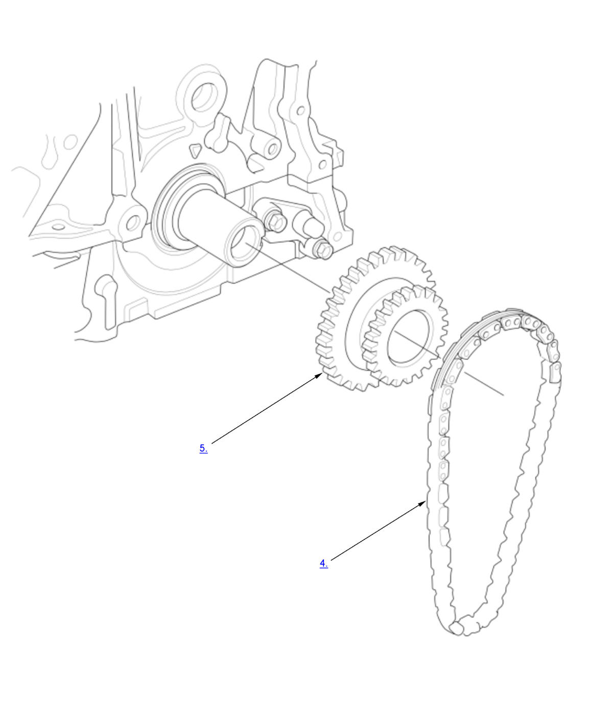

Engine Oil Pump Chain Removal and Installation (K20C1) (2017 2018 2019 2020 2021): Removal: Procedure
NOTE:
Numbered call-outs in figure pertain to list numbers in following procedure.

Courtesy of HONDA, U.S.A., INC.- Cam Chain - Remove
- Engine Support Hanger and Universal Lifting Eyelet - Install
NOTE: - Be careful when working around the windshield.
- Be careful not to damage the hood opener cable when installing the engine support hanger at the front bulkhead.
1. Remove the front damper caps.
2. Install the universal lifting eyelet with a commercially available spacer (A) (about 50 mm (1.97 in) in length) to the cylinder head.
3. Install the engine support hanger onto the vehicle as shown.
4. Attach the hook to the slotted hole in the universal lifting eyelet.
5. Tighten the wing nut (B) by hand, and lift and support the engine/transmission.
- Oil Pump - Remove
- Oil Pump Chain - Remove
- Crankshaft Sprocket - Remove (If necessary)